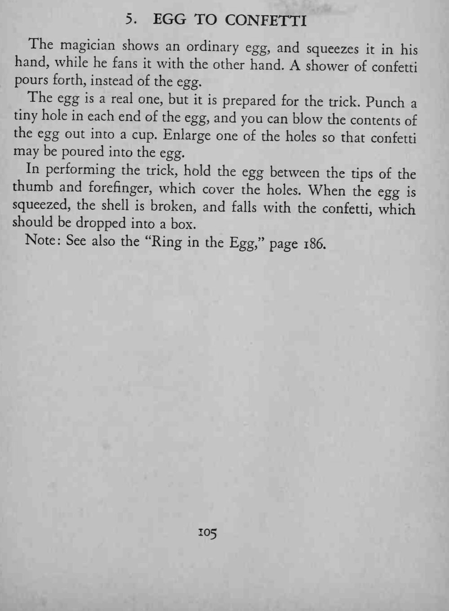
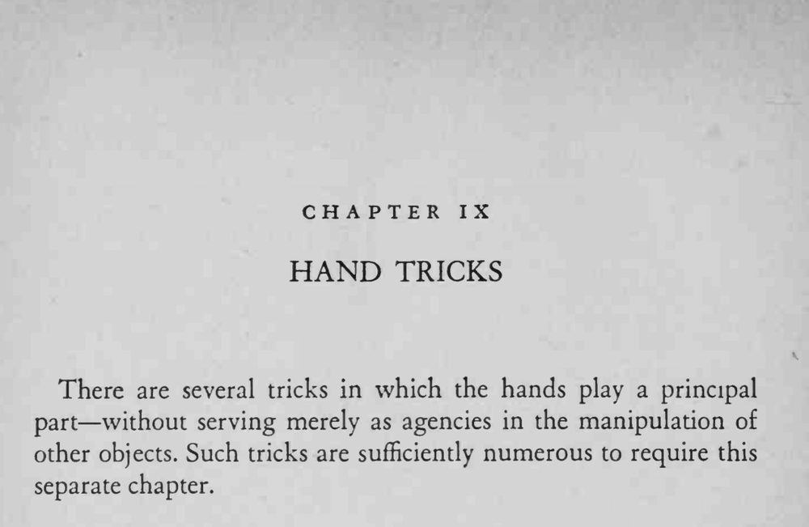

魔术师手里拿着一个鸡蛋，用力一捏，蛋壳碎裂，落下来的却是满把彩色纸屑。
两个小孔要藏在指尖之下；纸屑别塞太满，捏碎时才会撒得漂亮。


The magician shows an ordinary egg, and squeezes in his hand, while he fans it with the other hand. A shower of confetti pours forth, instead of the egg. The egg is a real one, but it is prepared for the trick. Punch a tiny hole in each end of the egg, and you can blow the contents of the egg out into a cup. Enlarge one of the holes so that confetti may be poured into the egg. In performing the trick, hold the egg between the tips of the thumb and forefinger, which cover the holes. When the egg squeezed, the shell is broken, and falls with the confetti, which should be dropped into a box. Note: See also the "Ring in the Egg," page 186. There are several tricks in which the hands play a principal part without serving merely as agencies in the manipulation of other objects. Such tricks are sufficiently numerous to require this separate chapter.